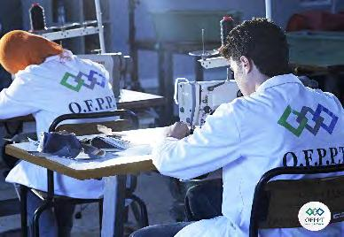

Les types de formations
La formation initiale

La formation initiale dispensée par l'Office de la Formation Professionnelle et de la Promotion du Travail
(OFPPT) au Maroc revêt une importance cruciale dans la préparation des étudiants à intégrer le marché du
travail. Cette institution publique propose une variété de programmes couvrant un large éventail de
secteurs professionnels.
Les programmes de formation initiale de l'OFPPT sont conçus pour fournir aux étudiants des compétences pratiques et professionnelles nécessaires pour réussir dans leurs domaines respectifs. Ces programmes s'adressent à des niveaux variés, allant du technicien spécialisé au niveau qualifiant, offrant ainsi une flexibilité pour répondre aux divers besoins du marché du travail.
La diversité des programmes proposés par l'OFPPT est remarquable, englobant des domaines tels que l'informatique, l'électronique, l'industrie, la logistique, le commerce, le tourisme, la santé, et l'agriculture. Cette approche large permet aux étudiants de choisir des filières en fonction de leurs intérêts et des opportunités professionnelles.
La durée des formations varie en fonction du programme choisi, certains étant de courte durée tandis que d'autres s'étalent sur plusieurs années. Un aspect notable de la formation à l'OFPPT est l'intégration de périodes d'alternance en entreprise dans certains programmes. Cela offre aux étudiants l'opportunité d'appliquer leurs connaissances dans un environnement professionnel réel, renforçant ainsi leur expérience pratique.
Les programmes de formation initiale de l'OFPPT sont conçus pour fournir aux étudiants des compétences pratiques et professionnelles nécessaires pour réussir dans leurs domaines respectifs. Ces programmes s'adressent à des niveaux variés, allant du technicien spécialisé au niveau qualifiant, offrant ainsi une flexibilité pour répondre aux divers besoins du marché du travail.
La diversité des programmes proposés par l'OFPPT est remarquable, englobant des domaines tels que l'informatique, l'électronique, l'industrie, la logistique, le commerce, le tourisme, la santé, et l'agriculture. Cette approche large permet aux étudiants de choisir des filières en fonction de leurs intérêts et des opportunités professionnelles.
La durée des formations varie en fonction du programme choisi, certains étant de courte durée tandis que d'autres s'étalent sur plusieurs années. Un aspect notable de la formation à l'OFPPT est l'intégration de périodes d'alternance en entreprise dans certains programmes. Cela offre aux étudiants l'opportunité d'appliquer leurs connaissances dans un environnement professionnel réel, renforçant ainsi leur expérience pratique.
La formation qualifiant

La formation qualifiante dispensée par l'Office de la Formation Professionnelle et de la Promotion du
Travail (OFPPT) au Maroc représente une étape essentielle dans le parcours éducatif des individus
cherchant à acquérir des compétences spécialisées et rapidement opérationnelles. Cette modalité de
formation vise à répondre aux besoins spécifiques du marché du travail en offrant des programmes courts et
ciblés.
Les formations qualifiantes de l'OFPPT se caractérisent par plusieurs aspects distinctifs. Tout d'abord, elles sont axées sur des domaines professionnels spécifiques, permettant aux apprenants de se spécialiser rapidement dans des secteurs en demande sur le marché de l'emploi. Ces programmes ont souvent une durée plus courte par rapport à d'autres niveaux de formation, ce qui les rend attractifs pour ceux cherchant à acquérir des compétences rapidement.
Les filières qualifiantes de l'OFPPT couvrent une variété de secteurs, allant de la technologie de l'information et de la communication à l'industrie, en passant par les métiers du commerce, de la santé, et de l'agriculture. Cette diversité permet aux apprenants de choisir des parcours correspondant à leurs intérêts et aux besoins du marché du travail.
Les diplômes ou certifications délivrés à la fin des formations qualifiantes sont reconnus sur le marché du travail, permettant aux diplômés d'entrer rapidement dans le monde professionnel. Ces accréditations témoignent de la qualité des compétences acquises au cours de la formation et renforcent la crédibilité des diplômés aux yeux des employeurs.
En résumé, la formation qualifiante de l'OFPPT joue un rôle crucial dans la réponse aux besoins spécifiques du marché du travail en formant rapidement des professionnels compétents et spécialisés. Elle offre une voie rapide et efficace vers l'employabilité, contribuant ainsi au développement d'une main-d'œuvre qualifiée et adaptée aux exigences professionnelles contemporaines.
Les formations qualifiantes de l'OFPPT se caractérisent par plusieurs aspects distinctifs. Tout d'abord, elles sont axées sur des domaines professionnels spécifiques, permettant aux apprenants de se spécialiser rapidement dans des secteurs en demande sur le marché de l'emploi. Ces programmes ont souvent une durée plus courte par rapport à d'autres niveaux de formation, ce qui les rend attractifs pour ceux cherchant à acquérir des compétences rapidement.
Les filières qualifiantes de l'OFPPT couvrent une variété de secteurs, allant de la technologie de l'information et de la communication à l'industrie, en passant par les métiers du commerce, de la santé, et de l'agriculture. Cette diversité permet aux apprenants de choisir des parcours correspondant à leurs intérêts et aux besoins du marché du travail.
Les diplômes ou certifications délivrés à la fin des formations qualifiantes sont reconnus sur le marché du travail, permettant aux diplômés d'entrer rapidement dans le monde professionnel. Ces accréditations témoignent de la qualité des compétences acquises au cours de la formation et renforcent la crédibilité des diplômés aux yeux des employeurs.
En résumé, la formation qualifiante de l'OFPPT joue un rôle crucial dans la réponse aux besoins spécifiques du marché du travail en formant rapidement des professionnels compétents et spécialisés. Elle offre une voie rapide et efficace vers l'employabilité, contribuant ainsi au développement d'une main-d'œuvre qualifiée et adaptée aux exigences professionnelles contemporaines.
Cours du soir


La formation en cours du soir proposée par l'Office de la Formation Professionnelle et de la Promotion du
Travail (OFPPT) au Maroc constitue une opportunité précieuse pour les individus souhaitant concilier leur
désir d'acquérir des compétences professionnelles avec d'autres engagements, tels que le travail ou les
responsabilités familiales.
Cette modalité de formation vise à offrir une flexibilité temporelle aux apprenants en leur permettant de suivre des cours en dehors des heures traditionnelles de travail. Les programmes de formation en cours du soir couvrent un large éventail de domaines, allant de la technologie de l'information et de la communication à l'industrie, en passant par les métiers du commerce, de la santé et de l'agriculture.
L'un des avantages majeurs de la formation en cours du soir de l'OFPPT réside dans sa capacité à s'adapter aux réalités quotidiennes des apprenants. Cela facilite l'accès à la formation pour ceux qui travaillent pendant la journée ou qui ont d'autres engagements importants. Cette flexibilité permet à un public diversifié de bénéficier des opportunités de formation professionnelle offertes par l'OFPPT.
Les cours du soir de l'OFPPT suivent généralement la même rigueur académique que les programmes de jour. Les apprenants ont accès à des enseignants qualifiés, à des installations modernes et à des ressources pédagogiques actualisées. La qualité de l'enseignement demeure une priorité, offrant ainsi aux étudiants une expérience éducative enrichissante et conforme aux normes professionnelles.
Cette modalité de formation vise à offrir une flexibilité temporelle aux apprenants en leur permettant de suivre des cours en dehors des heures traditionnelles de travail. Les programmes de formation en cours du soir couvrent un large éventail de domaines, allant de la technologie de l'information et de la communication à l'industrie, en passant par les métiers du commerce, de la santé et de l'agriculture.
L'un des avantages majeurs de la formation en cours du soir de l'OFPPT réside dans sa capacité à s'adapter aux réalités quotidiennes des apprenants. Cela facilite l'accès à la formation pour ceux qui travaillent pendant la journée ou qui ont d'autres engagements importants. Cette flexibilité permet à un public diversifié de bénéficier des opportunités de formation professionnelle offertes par l'OFPPT.
Les cours du soir de l'OFPPT suivent généralement la même rigueur académique que les programmes de jour. Les apprenants ont accès à des enseignants qualifiés, à des installations modernes et à des ressources pédagogiques actualisées. La qualité de l'enseignement demeure une priorité, offrant ainsi aux étudiants une expérience éducative enrichissante et conforme aux normes professionnelles.